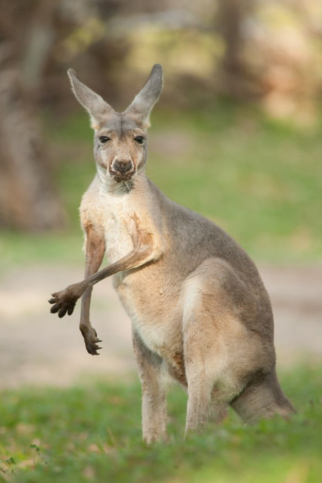

El Canguro es un mamífero marsupial originario de Australia conocido por desplazarse saltando..

• Patas traseras muy fuertes. • Cola larga que ayuda al equilibrio. • Las crías se desarrollan en una bolsa llamada marsupio. • Puede medir más de 1.5 metros. • Se mueve saltando grandes distancias.
El canguro utiliza su cola como apoyo para mantenerse estable cuando se mueve o se defiende.